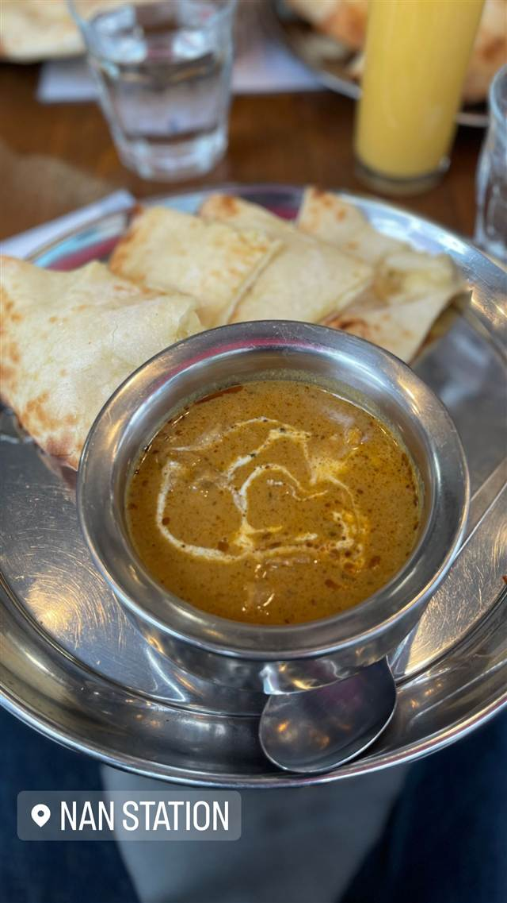

NAN STATION（ナンステーション）
20種のスパイスカレーとハチミツ香るハニーチーズナン
NAN STATION
下北沢で20年以上愛されるインドカレー店。名物は大きなナンにチーズとハチミツをたっぷりかけた「ハニーチーズナン」で、テレビ紹介をきっかけに一躍人気に。20種類のスパイスを使った本格カレーとの組み合わせが楽しめる。
TRIVIA
へえ、という話
- かつては行列が絶えない人気店だったが、今は平日なら並ばず入れることが多い
- 3種のチーズナン（ハニー・抹茶・ゴルゴンゾーラ）がテレビで紹介された
- 姉妹店としてNAN STATION CAFE＆TERRACEがある
REVIEWS
みんなの声
3.43食べログ
「パリもちナンとボリューム満点」に注目
- パリパリでもちもちの焼きたてナンの食感を評価する声が非常に多い
- ハニーチーズナンのとろけるチーズと蜂蜜の風味を評価する声がある
- ナンの量が多く胃がいっぱいになるほどのボリュームを評価する声が多い
- 土曜の昼どきには十五分ほど並ぶこともあり混雑しやすいという声がある
食べログ 口コミ235件
| 創業 | 2005年頃創業（2025年に20周年） |
|---|---|
| 看板 | ハニーチーズナン |
| こだわり | 20種類のスパイスを使った本格インドカレーと、チーズとハチミツを組み合わせたナンが看板。抹茶チーズナンやゴルゴンゾーラチーズナンなど派生メニューもある。 |
| 掲載・受賞 | ハニーチーズナン・抹茶チーズナン・ゴルゴンゾーラチーズナンがテレビで紹介された。 |
| どこから | 23区の外れ・近郊 |
| いつ行けるか | 行列 |
| 予算 | 昼 ¥1,000～¥1,999 夜 ¥1,000～¥1,999 |
| 場所 | 下北沢 東京都世田谷区北沢 |
| 注意 | 以前は行列必至の人気店だったが、現在は平日なら待たずに入店できることが多い。カウンター席もあり一人でも利用しやすい。 |
食べたもの：カレーとナン